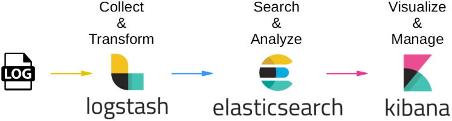
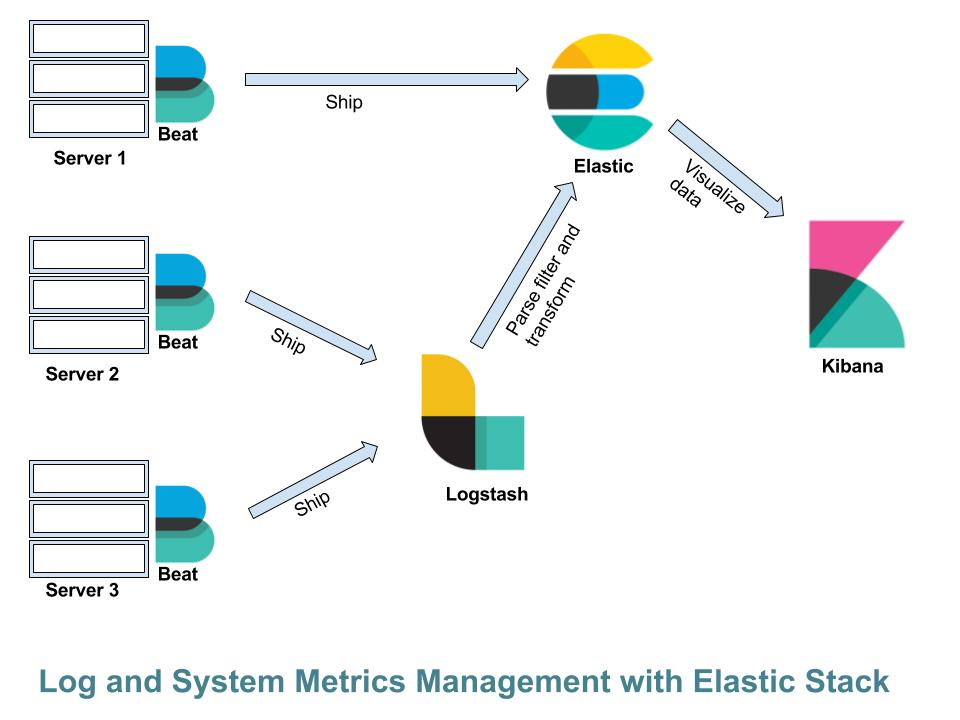
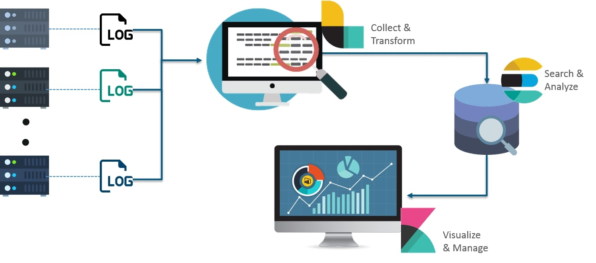
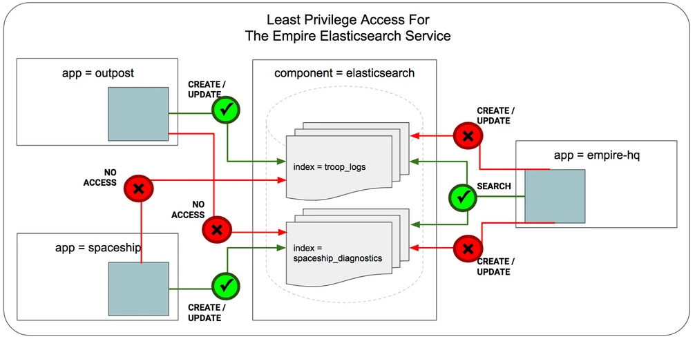

ELK Stack
ELK Stack es un conjunto de herramientas de código abierto diseñado para la recolección, análisis y visualización de datos en tiempo real. Su nombre proviene de las iniciales de sus tres componentes principales: Elasticsearch, Logstash y Kibana. Este conjunto de herramientas es ampliamente utilizado en el monitoreo de sistemas, análisis de registros (logs) y seguridad informática.
Con la creciente cantidad de datos generados por sistemas modernos, la necesidad de soluciones eficientes para procesar, indexar y visualizar estos datos ha llevado a ELK Stack a convertirse en una de las alternativas preferidas frente a otras herramientas.

Componentes de ELK Stack
- ⌬ Elasticsearch: Es el motor de búsqueda y análisis que sirve como base del stack. Elasticsearch está diseñado para almacenar grandes volúmenes de datos y proporcionar búsquedas rápidas y eficientes. Utiliza un modelo de almacenamiento basado en documentos JSON y es altamente escalable gracias a su arquitectura distribuida.
- ⌬ Logstash: Es la herramienta encargada de la ingesta, transformación y carga de datos. Logstash permite recolectar datos desde diversas fuentes, como archivos de registros, bases de datos y colas de mensajes, y procesarlos para normalizarlos antes de enviarlos a Elasticsearch.
- ⌬ Kibana: Es la interfaz de visualización de datos. Permite crear dashboards interactivos, realizar búsquedas avanzadas y analizar tendencias a través de gráficos, mapas y otras herramientas visuales.
Adicionalmente, se puede integrar Beats, una colección de agentes ligeros diseñados para enviar datos desde los servidores a Logstash o directamente a Elasticsearch.

Funcionamiento de ELK Stack
El flujo de datos dentro de ELK Stack puede describirse en los siguientes pasos:
- Recolecta de datos: Logstash (o Beats) recopila datos desde fuentes como archivos de logs, bases de datos, APIs o eventos de red.
- Procesamiento y transformación: Logstash aplica filtros y transforma los datos para estructurarlos correctamente antes de enviarlos a Elasticsearch.
- Indexación y almacenamiento: Elasticsearch recibe los datos procesados y los almacena en su índice distribuido, permitiendo consultas rápidas y eficientes.
- Análisis y visualización: Kibana se conecta a Elasticsearch para proporcionar dashboards y herramientas de visualización interactivas.

Ventajas frente a otras alternativas
- Open Source: A diferencia de otras soluciones comerciales como Splunk, ELK Stack es de código abierto, lo que significa que puede ser implementado sin costos de licencia y con acceso a una comunidad activa de desarrolladores.
- Escalabilidad y Flexibilidad: Elasticsearch permite escalar horizontalmente agregando nuevos nodos al clúster, lo que facilita la gestión de grandes volúmenes de datos sin comprometer el rendimiento.
- Integración: ELK Stack puede integrarse con plataformas cloud, bases de datos, herramientas de automatización y servicios de mensajería, lo que lo hace altamente adaptable a distintas necesidades empresariales.
- Personalización y Análisis Avanzado: Kibana permite la creación de dashboards altamente personalizados con alertas, paneles de control interactivos y compatibilidad con Machine Learning para análisis predictivos.
Instalar Elasticsearch
❏ Puedes instalar Elasticsearch desde los repositorios de Elastic.
❏ Configurar Elasticsearch para un único nodo.
ryuzak1@ubuntu:~$ sudo nano /etc/elasticsearch/elasticsearch.yml
GNU nano 8.1 /etc/elasticsearch/elasticsearch.yml *
# ======================== Elasticsearch Configuration =========================
#
# NOTE: Elasticsearch comes with reasonable defaults for most settings.
# Before you set out to tweak and tune the configuration, make sure you
# understand what are you trying to accomplish and the consequences.
#
# The primary way of configuring a node is via this file. This template lists
# the most important settings you may want to configure for a production cluster.
#
# Please consult the documentation for further information on configuration options:
# https://www.elastic.co/guide/en/elasticsearch/reference/index.html
#
# ---------------------------------- Cluster -----------------------------------
#
# Use a descriptive name for your cluster:
#
cluster.name: my-application
#
# ------------------------------------ Node ------------------------------------
#
# Use a descriptive name for the node:
#
node.name: node-1
#
# ---------------------------------- Network -----------------------------------
#
# By default Elasticsearch is only accessible on localhost. Set a different
# address here to expose this node on the network:
#
network.host: 0.0.0.0
#
# --------------------------------- Discovery ----------------------------------
#
# Pass an initial list of hosts to perform discovery when this node is started:
# The default list of hosts is ["127.0.0.1", "[::1]"]
#
discovery.seed_hosts: ["127.0.0.1"]
#
# Bootstrap the cluster using an initial set of master-eligible nodes:
#
cluster.initial_master_nodes: ["node-1"]
#
#----------------------- BEGIN SECURITY AUTO CONFIGURATION -----------------------
#
# The following settings, TLS certificates, and keys have been automatically
# generated to configure Elasticsearch security features on 08-03-2025 01:13:55
#
# --------------------------------------------------------------------------------
# Enable security features
xpack.security.enabled: false
xpack.security.enrollment.enabled: false
# Enable encryption for HTTP API client connections, such as Kibana, Logstash, and Agents
xpack.security.http.ssl:
enabled: false
keystore.path: certs/http.p12
# Enable encryption and mutual authentication between cluster nodes
xpack.security.transport.ssl:
enabled: false
verification_mode: certificate
keystore.path: certs/transport.p12
truststore.path: certs/transport.p12
# cluster.initial_master_nodes: ["Computer"]
Desactivar la seguridad en Elasticsearch puede ser útil en entornos de pruebas locales o aislados, pero no es recomendable en entornos de producción o accesibles desde Internet. Si decides desactivarla, asegúrate de restringir el acceso a Elasticsearch y de volver a habilitar la seguridad una vez que termines las pruebas.
Desactivar la seguridad en Elasticsearch tiene las siguientes implicaciones:
- Cualquier persona con acceso a la red donde está corriendo Elasticsearch podrá acceder a los datos sin necesidad de autenticarse.
- Las comunicaciones entre los nodos de Elasticsearch y entre Elasticsearch y los clientes no estarán cifradas.
- No habrá restricciones basadas en roles o permisos. Todos los usuarios tendrán acceso completo a los índices y datos.
Si necesitas cambiar el puerto predeterminado, debes editar el archivo de configuración de Elasticsearch.
Busca la línea "http.port: 9200" y reemplaza 9200 por el puerto que desees utilizar.
❏ Cambiar la cantidad de memoria utilizada.
❏ Habilitar y arrancar Elasticsearch.
❏ Verificar que Elasticsearch está corriendo.
ryuzak1@ubuntu:~$ sudo systemctl status elasticsearch
● elasticsearch.service - Elasticsearch
Loaded: loaded (/usr/lib/systemd/system/elasticsearch.service; enabled; preset: disabled)
Active: active (running) since Fri 2025-03-07 19:41:11 CST; 24s ago
Invocation: 7ae7fa01afea434859c56fdc2e715cab
Docs: https://www.elastic.co
Main PID: 9141 (java)
Tasks: 105 (limit: 9393)
Memory: 4.3G (peak: 4.3G swap: 67.3M swap peak: 75.2M)
CPU: 34.105s
CGroup: /system.slice/elasticsearch.service
├─9141 /usr/share/elasticsearch/jdk/bin/java -Xms4m -Xmx64m -XX:+UseSerialGC -Dcli.name=server -Dcli.script=/usr/share/elasticsearch/bin/elasticsearch -Dcl>
├─9200 /usr/share/elasticsearch/jdk/bin/java -Des.networkaddress.cache.ttl=60 -Des.networkaddress.cache.negative.ttl=10 -XX:+AlwaysPreTouch -Xss1m -Djava.a>
└─9226 /usr/share/elasticsearch/modules/x-pack-ml/platform/linux-x86_64/bin/controller
Usa curl para verificar que el servicio está activo:
ryuzak1@ubuntu:~$ curl -X GET "http://localhost:9200/_cluster/health?pretty"
{
"name" : "node-1",
"cluster_name" : "my-application",
"cluster_uuid" : "mvXwIjRZS2qhbZ8tcy4uYA",
"version" : {
"number" : "8.17.3",
"build_flavor" : "default",
"build_type" : "deb",
"build_hash" : "a091340de489bd4b127874f7e365b0cadf9b140d2",
"build_date" : "2025-02-28T10:07:26.089129809Z",
"build_snapshot" : false,
"lucene_version" : "9.12.0",
"minimum_wire_compatibility_version" : "7.17.0",
"minimum_index_compatibility_version" : "7.0.0"
},
"tagline" : "You Know, for Search"
}
Uso Básico de Elasticsearch
Elasticsearch es un motor de búsqueda basado en documentos que almacena datos en formato JSON. Se organiza en índices, que contienen documentos, los cuales tienen campos con valores estructurados o no estructurados.
Antes de agregar documentos, debes definir un índice. Si no lo defines, Elasticsearch lo creará automáticamente cuando insertes el primer documento.
❏ Para crear un índice:
ryuzak1@ubuntu:~$ curl -X PUT "http://localhost:9200/test" -H "Content-Type: application/json" -d ' {"settings": {"number_of_shards": 1, "number_of_replicas": 1}}'
{"acknowledged":true,"shards_acknowledged":true,"index":"test"}
- ⌭ number_of_shards: Número de fragmentos en los que se divide el índice.
- ⌭ number_of_replicas: Número de copias de seguridad de los datos.
Los documentos se almacenan en JSON dentro de un índice. Puedes insertar un documento usando POST o PUT.
❏ Ejemplo de agregar un documento con POST:
ryuzak1@ubuntu:~$ curl -X POST "http://localhost:9200/test/_doc/" -H "Content-Type: application/json" -d '{"nombre": "Juan Pérez", "edad": 30, "ciudad": "Madrid", "profesion": "Ingeniero"}'
{"_index":"test","_id":"7m0KdJUBtLEq70R13ito","_version":1,"result":"created","_shards":{"total":2,"successful":1,"failed":0},"_seq_no":0,"_primary_term":1}
❏ Esto creará un documento con un ID autogenerado. Si quieres asignar un ID específico, usa PUT:
ryuzak1@ubuntu:~$ curl -X PUT "http://localhost:9200/test/_doc/1" -H "Content-Type: application/json" -d '{"nombre": "Ana López", "edad": 35, "ciudad": "Barcelona", "profesion": "Analista"}'
{"_index":"test","_id":"1","_version":1,"result":"created","_shards":{"total":2,"successful":1,"failed":0},"_seq_no":1,"_primary_term":1}
❏ Para recuperar un documento específico por su ID:
ryuzak1@ubuntu:~$ curl -X GET "http://localhost:9200/test/_doc/1?pretty"
{
"_index" : "test",
"_id" : "1",
"_version" : 3,
"_seq_no" : 3,
"_primary_term" : 1,
"found" : true,
"_source" : {
"nombre" : "Ana López",
"edad" : 35,
"ciudad" : "Barcelona",
"profesion" : "Analista"
}
}
❏ Puedes buscar documentos que cumplan ciertos criterios usando _search:
ryuzak1@ubuntu:~$ curl -X GET "http://localhost:9200/test/_search" -H "Content-Type: application/json" -d '{"query": {"match": {"ciudad": "Madrid"}}}'
{"took":3,"timed_out":false,"_shards":{"total":1,"successful":1,"skipped":0,"failed":0},"hits":{"total":{"value":4,"relation":"eq"},"max_score":0.5753642,"hits":[{"_index":"test","_id":"7m0KdJUBtLEq70R13ito","_score":0.5753642,"_source":{"nombre": "Juan Pérez", "edad": 30, "ciudad": "Madrid", "profesion": "Ingeniero"}},{"_index":"test","_id":"3","_score":0.5753642,"_source":{"nombre": "Marco Hernánez", "edad": 31, "ciudad": "Madrid", "profesion": "Ingeniero"}},{"_index":"test","_id":"4","_score":0.5753642,"_source":{"nombre": "Francisco Pérez", "edad": 26, "ciudad": "Madrid", "profesion": "Diseñador Gráfico"}},{"_index":"test","_id":"6","_score":0.5753642,"_source":{"nombre": "Brenda García", "edad": 29, "ciudad": "Madrid", "profesion": "Ingeniero"}}]}}
❏ Para actualizar un campo de un documento sin reemplazarlo por completo, usa _update:
ryuzak1@ubuntu:~$ curl -X POST "http://localhost:9200/test/_update/1" -H "Content-Type: application/json" -d '{"doc": {"edad": 26}}'
{"_index":"test","_id":"1","_version":4,"result":"updated","_shards":{"total":2,"successful":1,"failed":0},"_seq_no":9,"_primary_term":1}
❏ Si quieres borrar un documento por su ID:
ryuzak1@ubuntu:~$ curl -X DELETE "http://localhost:9200/test/_doc/6"
{"_index":"test","_id":"6","_version":2,"result":"deleted","_shards":{"total":2,"successful":1,"failed":0},"_seq_no":10,"_primary_term":1}
Esto elimina el documento con ID 1 del índice test.
❏ Puedes obtener solo una parte de los resultados con size y from:
ryuzak1@ubuntu:~$ curl -X GET "http://localhost:9200/test/_search" -H "Content-Type: application/json" -d '{"query": {"match_all": {}}, "size": 3, "from": 2}'
{"took":1,"timed_out":false,"_shards":{"total":1,"successful":1,"skipped":0,"failed":0},"hits":{"total":{"value":7,"relation":"eq"},"max_score":1.0,"hits":[{"_index":"test","_id":"3","_score":1.0,"_source":{"nombre": "Marco Hernánez", "edad": 31, "ciudad": "Madrid", "profesion": "Ingeniero"}},{"_index":"test","_id":"4","_score":1.0,"_source":{"nombre": "Francisco Pérez", "edad": 26, "ciudad": "Madrid", "profesion": "Diseñador Gráfico"}},{"_index":"test","_id":"5","_score":1.0,"_source":{"nombre": "Arturo Vázquez", "edad": 33, "ciudad": "Barcelona", "profesion": "Psicólogo"}}]}}
Esto devuelve 3 documentos empezando desde el número 2.
❏ Para ordenar los resultados por la edad de menor a mayor:
ryuzak1@ubuntu:~$ curl -X GET "http://localhost:9200/test/_search" -H "Content-Type: application/json" -d '{"query": {"match_all": {}}, "sort": [{ "edad": "asc" }]}'
{"took":1,"timed_out":false,"_shards":{"total":1,"successful":1,"skipped":0,"failed":0},"hits":{"total":{"value":7,"relation":"eq"},"max_score":null,"hits":[{"_index":"test","_id":"4","_score":null,"_source":{"nombre": "Francisco Pérez", "edad": 26, "ciudad": "Madrid", "profesion": "Diseñador Gráfico"},"sort":[26]},{"_index":"test","_id":"1","_score":null,"_source":{"nombre":"Ana López","edad":26,"ciudad":"Barcelona","profesion":"Analista"},"sort":[26]},{"_index":"test","_id":"2","_score":null,"_source":{"nombre": "Pedro Alba", "edad": 27, "ciudad": "Barcelona", "profesion": "Analista"},"sort":[27]},{"_index":"test","_id":"6","_score":null,"_source":{"nombre": "Brenda García", "edad": 29, "ciudad": "Madrid", "profesion": "Ingeniero"},"sort":[29]},{"_index":"test","_id":"7m0KdJUBtLEq70R13ito","_score":null,"_source":{"nombre": "Juan Pérez", "edad": 30, "ciudad": "Madrid", "profesion": "Ingeniero"},"sort":[30]},{"_index":"test","_id":"3","_score":null,"_source":{"nombre": "Marco Hernánez", "edad": 31, "ciudad": "Madrid", "profesion": "Ingeniero"},"sort":[31]},{"_index":"test","_id":"5","_score":null,"_source":{"nombre": "Arturo Vázquez", "edad": 33, "ciudad": "Barcelona", "profesion": "Psicólogo"},"sort":[33]}]}}
❏ Para buscar documentos donde "edad" esté entre 25 y 28 años:
ryuzak1@ubuntu:~$ curl -X GET "http://localhost:9200/test/_search" -H "Content-Type: application/json" -d '{"query": {"range": {"edad": {"gte": 25, "lte": 28 }}}}'
{"took":8,"timed_out":false,"_shards":{"total":1,"successful":1,"skipped":0,"failed":0},"hits":{"total":{"value":3,"relation":"eq"},"max_score":1.0,"hits":[{"_index":"test","_id":"2","_score":1.0,"_source":{"nombre": "Pedro Alba", "edad": 27, "ciudad": "Barcelona", "profesion": "Analista"}},{"_index":"test","_id":"4","_score":1.0,"_source":{"nombre": "Francisco Pérez", "edad": 26, "ciudad": "Madrid", "profesion": "Diseñador Gráfico"}},{"_index":"test","_id":"1","_score":1.0,"_source":{"nombre":"Ana López","edad":26,"ciudad":"Barcelona","profesion":"Analista"}}]}}
Formatos de Datos en Elasticsearch
Elasticsearch acepta documentos en JSON, y dentro de cada documento puedes usar los siguientes tipos de datos:
- Texto (text, keyword): Para almacenar cadenas de caracteres.
- Números (integer, float, double, long, short): Para datos numéricos.
- Booleanos (boolean): Para true o false.
- Fechas (date):Formatos como YYYY-MM-DD.
- Objetos (object): Datos anidados dentro de un documento.
- Geo (geo_point, geo_shape): Para almacenar ubicaciones geográficas.
Ejemplo de un documento con varios tipos de datos:
{
"nombre": "Pedro Gómez",
"edad": 35,
"activo": true,
"fecha_registro": "2024-03-07",
"ubicacion": {
"lat": 40.416775,
"lon": -3.703790
}
}

Instalar Logstash
❏ Puedes descargar Logstash para Windows desde la web oficial de Elastic: https://www.elastic.co/downloads/logstash.
Logstash usa archivos de configuración .conf con tres secciones principales:
- ▱ input: Define la fuente de los datos (archivos, bases de datos, syslog, Kafka, etc.).
- ▱ filter: Aplica transformaciones a los datos (parseo, eliminación, enriquecimiento, etc.).
- ▱ output: Define el destino de los datos (Elasticsearch, bases de datos, archivos, etc.).
Uso Básico de Logstash
❏ Crear un Archivo de Configuración Básico.
Y agrega lo siguiente:
input {
file {
path => "/var/log/syslog"
start_position => "beginning"
}
}
filter {
grok {
match => { "message" => "%{SYSLOGTIMESTAMP:timestamp} %{SYSLOGHOST:host} %{WORD:process} %{GREEDYDATA:log}" }
}
}
output {
elasticsearch {
hosts => ["http://localhost:9200"]
index => "logs-syslog"
}
stdout { codec => rubydebug }
}
- ⌭ input: Se define como fuente el archivo /var/log/syslog.
- ⌭ filter: Usa grok para extraer campos estructurados del log.
- ⌭ output: Envía los datos a un índice en Elasticsearch llamado logs-syslog y los muestra en la terminal (stdout).
❏ Iniciar Logstash con el Archivo de Configuración.
❏ Leer Datos desde Diferentes Fuentes.
- Leer desde un Archivo
Si tienes un archivo de logs llamado log.txt, usa la siguiente configuración:
input {
file {
path => "/home/usuario/log.txt"
start_position => "beginning"
sincedb_path => "/dev/null"
}
}
output {
stdout { codec => rubydebug }
}
sincedb_path => "/dev/null" hace que siempre lea el archivo desde el inicio.
- Leer desde Syslog en Tiempo Real
Si quieres procesar logs del sistema:
input {
syslog {
port => 5514
}
}
output {
elasticsearch {
hosts => ["http://localhost:9200"]
index => "logs-syslog"
}
}
Esto captura logs enviados a través de syslog en el puerto 5514.
- Recibir Datos desde HTTP (API REST)
Si una aplicación quiere enviar datos a Logstash mediante HTTP POST:
input {
http {
port => 8080
}
}
output {
elasticsearch {
hosts => ["http://localhost:9200"]
index => "api-logs"
}
}
❏ Procesamiento Avanzado con Filtros
- Uso de GROK para Extraer Datos
Si tienes logs en texto sin formato y necesitas estructurarlos:
filter {
grok {
match => { "message" => "%{COMBINEDAPACHELOG}" }
}
}
Esto estructura logs de Apache automáticamente.
- Convertir Formato de Fechas
Si un campo llamado timestamp tiene un formato incorrecto:
filter {
date {
match => ["timestamp", "dd/MMM/yyyy:HH:mm:ss Z"]
target => "@timestamp"
}
}
Ajusta fechas al formato estándar de Elasticsearch.
- Convertir Datos a Minúsculas o Mayúsculas
filter {
mutate {
lowercase => ["usuario"]
}
}
Esto convierte Usuario a usuario.
❏ Enviar Datos a Múltiples Destinos.
Puedes enviar los datos a Elasticsearch, un archivo y stdout al mismo tiempo:
output {
elasticsearch {
hosts => ["http://localhost:9200"]
index => "multi-output"
}
file {
path => "/var/log/logstash_output.log"
}
stdout { codec => rubydebug }
}
Esto almacena los logs en Elasticsearch, los guarda en un archivo y los imprime en la consola.
❏ Verificar Errores en Logstash.
Instalar Kibana
❏ Puedes descargar Kibana para Windows desde la web oficial de Elastic: https://www.elastic.co/downloads/kibana.
❏ Configurar Kibana.
ryuzak1@ubuntu:~$ sudo nano /etc/kibana/kibana.yml
GNU nano 8.1 /etc/kibana/kibana.yml *
# Specifies the address to which the Kibana server will bind. IP addresses and host names are both valid values.
# The default is 'localhost', which usually means remote machines will not be able to connect.
# To allow connections from remote users, set this parameter to a non-loopback address.
server.host: "0.0.0.0"
# =================== System: Kibana Server (Optional) ===================
# Enables SSL and paths to the PEM-format SSL certificate and SSL key files, respectively.
# These settings enable SSL for outgoing requests from the Kibana server to the browser.
#server.ssl.enabled: false
#server.ssl.certificate: /path/to/your/server.crt
#server.ssl.key: /path/to/your/server.key
# =================== System: Elasticsearch ===================
# The URLs of the Elasticsearch instances to use for all your queries.
elasticsearch.hosts: ["http://localhost:9200"]
Accede en un navegador a: http://localhost:5601
Importar Datos en Kibana.
Desde un Archivo CSV o JSON
- Ve a "Stack Management" → "Index Patterns".
- Usa "Upload a file" para cargar un CSV o JSON.
- Define los campos y crea un índice.
Alertas y Monitorización en Kibana.
Si quieres recibir alertas cuando los datos cumplan ciertas condiciones:
- Ve a "Alerts & Actions".
- Define una nueva alerta con condiciones específicas (por ejemplo, si un servidor está caído).
- Configura las acciones: Enviar un email, webhook o Slack notification.
Uso Básico de Kibana
❏ Buscar y Filtrar Datos en Kibana.
Puedes buscar datos en tiempo real usando KQL (Kibana Query Language).
Ejemplo:
- Buscar errores en logs: message: "error"
- Filtrar registros de usuarios de México: country: "Mexico"
❏ Conectar Kibana con Logstash y Elasticsearch.
Si Logstash envía datos a Elasticsearch, Kibana puede visualizarlos.
Ejemplo de configuración en logstash.conf:
output {
elasticsearch {
hosts => ["http://localhost:9200"]
index => "logs"
}
}
Luego, en Kibana:
- Ve a "Stack Management" → "Index Patterns".
- Crea un patrón de índice para logs-*.
- Visualiza los datos en "Discover".